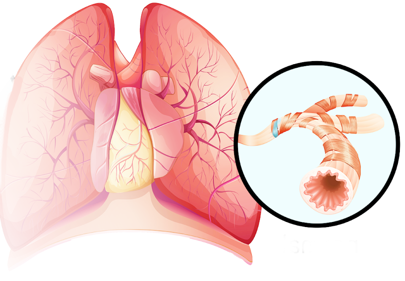

Sinus Relief
Reduction of symptoms associated with sinus blockage or inflammation.
Sinus Septum
The partition dividing the sinus cavity, which may be adjusted during
surgery.
Sinus Surgery
Surgical procedures aimed at treating sinus issues, including balloon
dilation.
Sinus Wall
The boundary or structure of the sinus cavity, which may be treated with
balloon dilation.
Sphenoid Sinus
Sinus located behind the eyes, accessed through sinus balloon procedures.
Sphenoidotomy
Surgical procedure involving the sphenoid sinus, potentially utilizing
balloons.
Tissue Remodeling
Changes to sinus tissue structure as a result of balloon dilation.
Transnasal Access
Accessing the sinuses through the nasal passages using endoscopic
techniques.
Advanced Airway Management
Advanced techniques and equipment used for complex airway management.
Airway Clearance
Techniques used to remove mucus obstructions from the airway.
Airway Clearance Therapy
Treatments designed to remove mucus and clear the airway.
Airway Emergency
Critical situation requiring immediate intervention to secure the airway.
Airway Equipment
Tools and devices used to manage and maintain the airway.
Airway Evaluation
Assessment of the airway's condition and suitability for procedures.
Airway Exchange Catheter
Catheter used to facilitate changing of airway tubes.

Airway Management Algorithm
Step-by-step protocol for managing and securing the airway.
Airway Maneuvers
Techniques used to open or maintain the airway during medical procedures.
Airway Monitoring
Continuous assessment of the airway's condition and functionality.